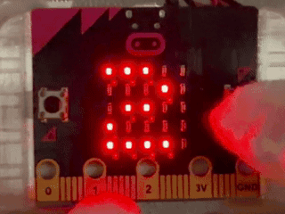
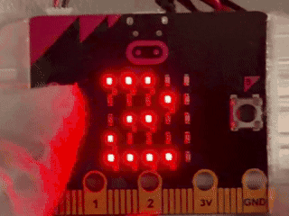
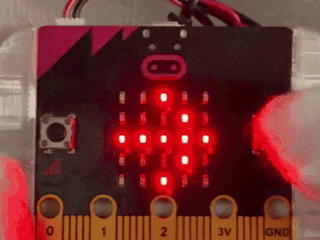
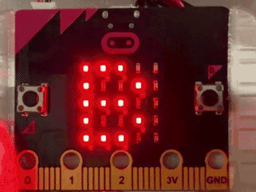
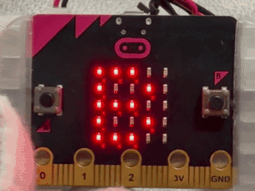

1けたフラッシュ暗算チャレンジ 1桁フラッシュ暗算チャレンジ
このプログラムでは、micro:bitを使って、1けたの数をフラッシュひょうじで見て合計を答える暗算学習ができます。 このプログラムでは、micro:bitを使って、1桁の数をフラッシュ表示で見て合計を答える暗算学習ができます。
使い方
- さいしょにフラッシュの回数をえらぶ 最初にフラッシュの回数を選ぶ
- Aボタンで2回ひょうじと3回ひょうじを切りかえる Aボタンで2回表示と3回表示を切りかえる
- Bボタンでフラッシュひょうじを始める Bボタンでフラッシュ表示を始める
- 1けたの数字がじゅんばんにフラッシュひょうじされる 1桁の数字が順番にフラッシュ表示される
- ひょうじが終わると回答画面になり「0」がひょうじされる 表示が終わると回答画面になり「0」が表示される
- Aボタンで答えの数字を1ずつふやす Aボタンで答えの数字を1ずつ増やす
- Bボタンで答えを決める Bボタンで答えを決める
- せいかいのときはうれしい顔がひょうじされる 正解のときはうれしい顔が表示される
- ふせいかいのときはかなしい顔と正しい合計の数字がひょうじされる 不正解のときは悲しい顔と正しい合計の数字が表示される
- 終わるとさいしょの画面にもどり、くりかえし取り組める 終わると最初の画面に戻り、繰り返し取り組める

ねらい
- 短い時間で計算をする学習 短い時間で計算をする学習
- 暗算で合計を出す力をのばす学習 暗算で合計を出す力を伸ばす学習
- フラッシュの回数をえらんでむずかしさをかえる学習 フラッシュの回数を選んで難しさを変える学習
チャレンジ
- 数字のひょうじ時間を短くしてむずかしさを調整するくふう 数字の表示時間を短くしてむずかしさを調整する工夫
- 3回ひょうじだけでれんぞくちょうせんするルール作り 3回表示だけで連続挑戦するルール作り
- せいかい回数を数えてきろくするくふう 正解回数を数えて記録する工夫
1けたフラッシュ暗算チャレンジ（そうさほうほうちがいバージョン） 1桁フラッシュ暗算チャレンジ（操作方法違いバージョン）
このプログラムでは、micro:bitを使って、1けたの数をフラッシュひょうじで見て合計を答える暗算学習ができます。 このプログラムでは、micro:bitを使って、1桁の数をフラッシュ表示で見て合計を答える暗算学習ができます。
使い方
- さいしょにフラッシュの回数をえらぶ 最初にフラッシュの回数を選ぶ
- Aボタンで回数を1ずつふやす Aボタンで回数を1ずつ増やす
- Bボタンで回数を1ずつへらす Bボタンで回数を1ずつ減らす
- A+Bボタンで回数を決めて、フラッシュひょうじを始める A+Bボタンで回数を決めて、フラッシュ表示を始める
- 1けたの数字がじゅんばんにフラッシュひょうじされる 1けたの数字が順番にフラッシュ表示される
- ひょうじが終わると回答画面になり「0」がひょうじされる 表示が終わると回答画面になり「0」が表示される
- Aボタンで10のくらいの数字を1ずつふやす Aボタンで10の位の数字を1ずつ増やす
- Bボタンで1のくらいの数字を1ずつふやす Bボタンで1の位の数字を1ずつ増やす
- A+Bボタンで答えを決める A+Bボタンで答えを決める
- せいかいのときはうれしい顔がひょうじされる 正解のときはうれしい顔が表示される
- ふせいかいのときはかなしい顔と正しい合計の数字がひょうじされる 不正解のときは悲しい顔と正しい合計の数字が表示される
- 終わるとさいしょの画面にもどり、くりかえし取り組める 終わると最初の画面に戻り、繰り返し取り組める

ねらい
- 短い時間で計算をする学習 短い時間で計算をする学習
- 10のくらいと1のくらいを分けて考える学習 10の位と1の位を分けて考える学習
- 暗算で合計を出す力をのばす学習 暗算で合計を出す力を伸ばす学習
チャレンジ
- 数字のひょうじ時間を短くしてむずかしさを調整するくふう 数字の表示時間を短くして難しさを調整する工夫
- 3回ひょうじだけでれんぞくちょうせんするルール作り 3回表示だけで連続挑戦するルール作り
- せいかい回数を数えてきろくするくふう 正解回数を数えて記録する工夫
図形くらべ○×クイズ（△・◇・□） 図形比べ○×クイズ（△・◇・□）
このプログラムでは、micro:bitを使って、2回出る図形をくらべて同じかちがうかを○×で答える学習ができます。 このプログラムでは、micro:bitを使って、2回出る図形を比べて同じか違うかを○×で答える学習ができます。
使い方
- 開始画面で「B」、「→」（右のBボタンをおして）がこうごにひょうじされる 開始画面で「B」、「→」（右のBボタンを押して）が交互に表示される
- Bボタンをおすと「クラベテ」とひょうじされ、クイズが始まる Bボタンを押すと「クラベテ」と表示され、クイズが始まる
- 1回目の図形がひょうじされるので形をおぼえる 1回目の図形が表示されるので形を覚える
- 2回目の図形がひょうじされるので1回目と見くらべる 2回目の図形が表示されるので1回目と見比べる
- △は向きがちがっても同じ図形として考える △は向きが違っても同じ図形として考える
- 同じと思ったときは○をえらぶ 同じと思ったときは○を選ぶ
- ちがうと思ったときは×をえらぶ 違うと思ったときは×を選ぶ
- Aボタンで○と×を切りかえる Aボタンで○と×を切りかえる
- Bボタンで答えを決定する Bボタンで答えを決定する
- せいかいのときはうれしい顔がひょうじされる 正解のときはうれしい顔が表示される
- ふせいかいのときはかなしい顔がひょうじされる 不正解のときは悲しい顔が表示される
- 終わると開始画面にもどり、くり返し遊べる 終わると開始画面に戻り、繰り返し遊べる

ねらい
- 図形の形のちがいに気づく学習 図形の形の違いに気付く学習
- 向きと形を分けて考える学習 向きと形を分けて考える学習
- 見くらべてはんだんする力をのばす学習 見比べて判断する力を伸ばす学習
チャレンジ
- 図形のひょうじ時間を短くしてむずしさを調整するくふう 図形の表示時間を短くして難しさを調整する工夫
- れんぞくせいかい回数を数えてきろくするくふう 連続正解回数を数えて記録する工夫
- ひし形と□の見分けポイントを見つけるくふう ひし形と□の見分けポイントを見つける工夫
ストップウォッチ ストップウォッチ
このプログラムでは、micro:bitを使って、Bボタンでスタートとストップができるストップウォッチを作ります。 このプログラムでは、micro:bitを使って、Bボタンでスタートとストップができるストップウォッチを作ります。
使い方
- 開始画面で「B」、「→」（右のBボタンをおして）がこうごにひょうじされる 開始画面で「B」、「→」（右のBボタンを押して）が交互に表示される
- Bボタンをおすとスタートし、時間のけいそくが始まる Bボタンを押すとスタートし、時間の計測が始まる
- けいそく中に右下のLEDがてんめつして、動いている合図になる 計測中に右下のLEDが点滅して、動いている合図になる
- もう一度Bボタンをおすとストップし、時間のけいそくが終わる もう一度Bボタンを押すとストップし、時間の計測が終わる
- ストップのあとに秒数が数字でひょうじされる ストップのあとに秒数が数字で表示される
- A+Bボタンをおすと時間が0にもどり、開始画面にもどる A+Bボタンを押すと時間が0に戻り、開始画面に戻る

ねらい
- ボタンそうさで動きが切りかわる仕組みの学習 ボタン操作で動きが切り替わる仕組みの学習
- 時間を秒で数えてくらべられる活動づくり 時間を秒で数えて比べられる活動づくり
- けっかの数字を見てふり返る学習 結果の数字を見て振り返る学習
チャレンジ
- Aボタンでラップきろくをついかするくふう Aボタンでラップ記録を追加する工夫
- ラップ回数やラップ秒をひょうじするくふう ラップ回数やラップ秒を表示する工夫
- けいそく中の秒をひょうじするくふう 計測中の秒を表示する工夫
チーム歩数きょうそう（ホスト） チーム歩数競争（ホスト）
このプログラムは、micro:bitの「むせん（radio）」を使って、ホスト役1台とプレイヤー役1台いじょうからさいだい4台までを使い、合計2台から5台で遊ぶ集計プログラムです。 このプログラムは、micro:bitの「無線（radio）」を使って、ホスト役1台とプレイヤー役1台以上から最大4台までを使い、合計2台から5台で遊ぶ集計プログラムです。
使い方
- 開始画面で「H」（ホスト）、「B」、「→」（右のBボタンをおして）がこうごにひょうじされる 開始画面で「H」（ホスト）、「B」、「→」（右のBボタンを押して）が交互に表示される
- Bボタンをおすと「スタート」とひょうじされ、きょうぎが始まる Bボタンを押すと「スタート」と表示され、競技が始まる
- きょうぎ中はプレイヤーから送られた歩数がチームごとに合計される 競技中はプレイヤーから送られた歩数がチームごとに合計される
- もう一度Bボタンをおすと「ストップ」とひょうじされ、きょうぎが終わる もう一度Bボタンを押すと「ストップ」と表示され、競技が終わる
- その後、「1→合計」「2→合計」「3→合計」「4→合計」のじゅんにけっかがひょうじされる その後、「1→合計」「2→合計」「3→合計」「4→合計」の順に結果が表示される
- けっかをひょうじし終わると、開始画面にもどる 結果を表示し終わると、開始画面に戻る

ねらい
- むせんで受け取った数をチームべつに足し算してまとめる学習 無線で受け取った数をチーム別に足し算してまとめる学習
- 開始としゅうりょうでプログラムの動きを切りかえる学習 開始と終了でプログラムの動きを切り替える学習
- けっかを見てさくせんを考え直す学習 結果を見て作戦を考え直す学習
チャレンジ
- 勝ったチームだけを大きくひょうじするくふう 勝ったチームだけを大きく表示する工夫
- きょうぎ中のとちゅうけいかをひょうじするくふう 競技中の途中経過を表示する工夫
- チーム数をふやしたときの集計ほうほうのくふう チーム数を増やしたときの集計方法の工夫
チーム歩数きょうそう（プレイヤー） チーム歩数競争（プレイヤー）
このプログラムは、micro:bitの「むせん（radio）」と「かそくどセンサー」を使って、ホスト役1台とプレイヤー役1台いじょうからさいだい4台までを使い、合計2台から5台で遊ぶそうしんプログラムです。 このプログラムは、micro:bitの「無線（radio）」と「加速度センサー」を使って、ホスト役1台とプレイヤー役1台以上から最大4台までを使い、合計2台から5台で遊ぶ送信プログラムです。
使い方
- 開始画面の「P」（プレイヤー）、「B」、「→」（右のBボタンをおして）がこうごにひょうじされる 開始画面の「P」（プレイヤー）、「B」、「→」（右のBボタンを押して）が交互に表示される
- Aボタンをおすと、チーム番号が1から4まで切りかわってひょうじされる Aボタンを押すと、チーム番号が1から4まで切り替わって表示される
- Bボタンをおすと「スタート」とひょうじされ、きょうぎが始まる Bボタンを押すと「スタート」と表示され、競技が始まる
- きょうぎ中にmicro:bitをゆすると、歩数が1ずつふえる 競技中にmicro:bitをゆすると、歩数が1ずつ増える
- ふえた分の歩数が2秒ごとにホストへ送られる 増えた分の歩数が2秒ごとにホストへ送られる
- もう一度Bボタンをおすときょうぎが終わり、開始画面にもどる もう一度Bボタンを押すと競技が終わり、開始画面に戻る
ねらい
- かそくどセンサーで動きを数にしてふやす学習 加速度センサーで動きを数にして増やす学習
- ふえた分だけを送ってデータをまとめる学習 増えた分だけを送ってデータをまとめる学習
- チームできょうりょくして合計をきそう活動づくり チームで協力して合計を競う活動づくり
チャレンジ
- ゆするいがいの動きで歩数をふやすルール作り ゆする以外の動きで歩数を増やすルール作り
- 送るかんかくをかえてはんのうのちがいをくらべるくふう 送る間隔を変えて反応の違いを比べる工夫
- しゅうりょうのときに「ストップ」ひょうじをついかするくふう 終了のときに「ストップ」表示を追加する工夫
本情報の内容 (添付文書、リンク先などを含む) は、 作成日時点でのものであり、 予告なく変更される場合があります。